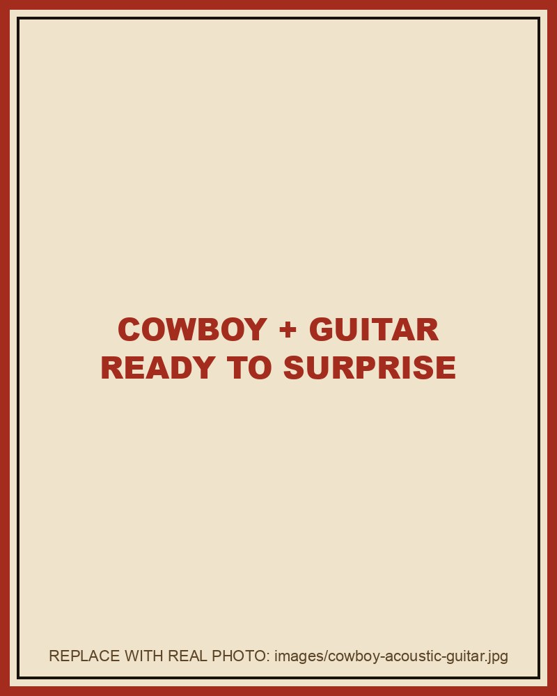

Bachelorette parties
A song about the bride and the future groom — using the stories only her friends know.
Bachelorette IdeasYou've heard of singing telegrams. You've never heard of one like this.
A singing telegram is usually a quick, forgettable gimmick: someone shows up, sings a standard song, hands over a card, leaves.
Singing Cowboy Nashville is the opposite. A real working Nashville musician — someone who plays the honky-tonks on Broadway for a living — shows up at your hotel, Airbnb or rooftop with an acoustic guitar. And instead of a generic song, he sings an original song written specifically about the guest of honor, using stories and secrets her friends secretly provided.
It's part performance, part prank, part love letter. And it's 100% Nashville.

Choose a package, date and location.
Stories, jokes, nicknames, disasters — privately.
An original song built around her life.
Live performance. In person. On the spot.
A song about the bride and the future groom — using the stories only her friends know.
Bachelorette IdeasMilestone birthdays, surprise party openers, "she thinks we're just pregaming."
Birthday SurprisesTell the Cowboy about her ex. He'll write a song about him too.
Divorce Party Ideas